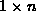
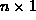

Data Structures and Algorithms
with Object-Oriented Design Patterns in Java
Data Structures and Algorithms
with Object-Oriented Design Patterns in Java


-
Complete the implementation of the Array class given in
Program
 to Program .
Write a test suite to verify all of the functionality.
Try to exercise every line of code in the implementation.
to Program .
Write a test suite to verify all of the functionality.
Try to exercise every line of code in the implementation. -
Complete the implementation of the LinkedList class given in
Program to Program .
Write a test suite to verify all of the functionality.
Try to exercise every line of code in the implementation.
-
Change the implementation of the LinkedList class given in
Program to Program
by removing the tail field.
That is, implement the singly-linked list variant
shown in Figure (a).
Write a test suite to verify all of the functionality.
Try to exercise every line of code in the implementation.
-
Change the implementation of the LinkedList class given in
Program to Program
so that it uses a circular, singly-linked list with a sentinel
as shown in Figure (c).
Write a test suite to verify all of the functionality.
Try to exercise every line of code in the implementation.
-
The MultiDimensionalArray class given in
Program to Program
only supports subscript ranges starting at zero.
Modify the implementation to allow an arbitrary subscript base
in each dimension.
-
Design and implement a three-dimensional matrix class Matrix3D
based on the two-dimensional class DenseMatrix given in
Program to Program
-
A row vector is a  matrix and a column vector
is an  matrix.
Define and implement classes RowVector and
ColumnVector as classes derived
from the base class Array given in
Program to Program .
Show how these classes can be combined to implement
the Matrix interface declared in Program .
 Copyright © 1998 by Bruno R. Preiss, P.Eng. All rights reserved.
Copyright © 1998 by Bruno R. Preiss, P.Eng. All rights reserved.